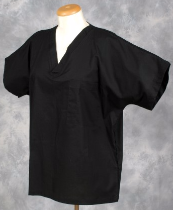

We are the original, leading UK supplier of 100% cotton Medical and Veterinary Scrubs.
Over the years we have supplied Medical and Veterinary scrubs to a wide and varied cross section of industries, from television
(Dr Who) to local vets and dentists, across the UK and around the world. Our company objective is to provide fine quality
garments at competitive prices, along with a strong customer service.
We have a large selection of 100% cotton Medical and Veterinary scrubs in stock of all colours, prints and sizes,
some of our prints include characters such as 'The Pink Panther' and 'Scooby Doo' and many others.
All of our scrubs are made from the finest quality cotton fabrics and to very high standards. All of our scrubs are manufactured
in the UK and backed with our 7 day guarantee*, for more information visit our help page for more information. Because
we are UK based we can also custom make your scrubs to match your corporate image. We can also personalise them with embroidered
logos and names.
We also manufacture theatre caps and these are available in plain or printed materials.
Excludes items made to order.
Shiba InuDog Breed

The Shiba Inu is the smallest of the six original and distinct spitz breeds of dog from Japan. A small, agile dog that copes
very well with mountainous terrain, the Shiba Inu was originally bred for hunting.